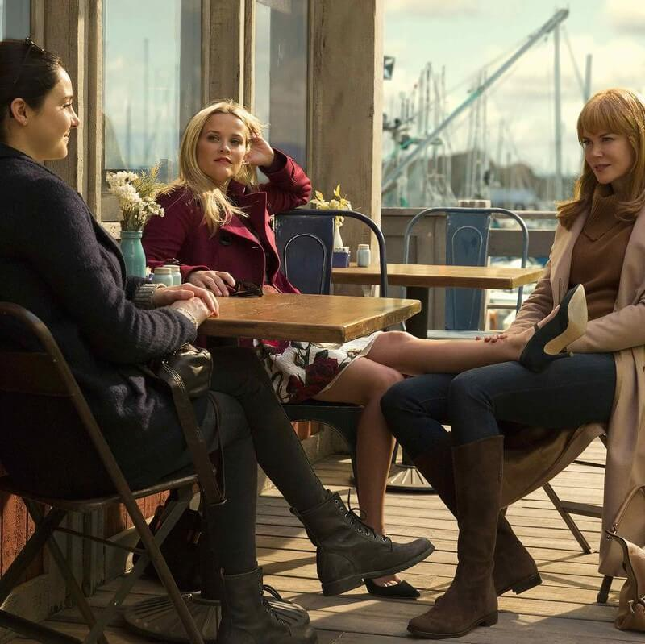
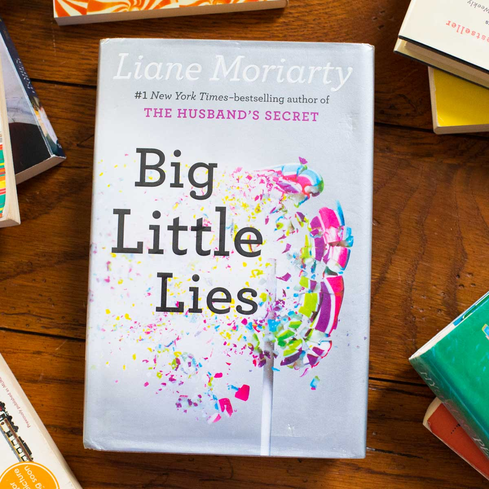
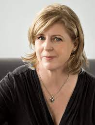

¿Cuál es tu episodeo favorito de la serie?
¡Contános!
Sinopsis
Celeste, Jane y Madeline son tres madres que viven en Monterrey, un pueblo en el Norte de California. Jane acaba de mudarse. Es una madre soltera en busca de una mejor vida. Madeline es una de las mujeres más populares del pueblo y también de las más temperamentales. Está casada con Ed, con el que tiene una hija pequeña, Chloe; y tiene una relación complicada con su exmarido Nathan y Abigail, la hija adolescente que comparten. Celeste es una exabogada que actualmente ejerce de ama de casa con dos hijos gemelos y su esposo Perry, un hombre de negocios que viaja mucho por trabajo. Su relación parece perfecta, pero esconde muchos secretos. Estas tres mujeres establecen unos lazos muy fuertes que las convierten en aliadas dentro una comunidad en la que nada es lo que parece. Sus vidas son sacudidas por un brutal asesinato, ocurrido durante una gala benéfica que organiza la escuela primaria a la que asisten sus hijos.
Libro
Big Little Lies, conocida también como Pequeñas Mentiras, es una novela escrita por Liane Moriarty en 2014. La inspiración principal de Moriarty para la historia provino de una entrevista radiofónica que escuchó en que una mujer relató la relación abusiva de sus padres. La mujer narró que, incluso de adulta, se escondía bajo su cama para huir de las peleas de sus padres, una experiencia que Moriarty acabó utilizando como una escena en el libro. Inicialmente, el libro era narrado en primera persona por cada uno de los tres protagonistas principales, pero Moriarty pronto decidió lo contrario, en cambio interfiere las declaraciones de personajes menores entre porciones de la historia.
Autora
Liane Moriarty es una autora australiana, escritora de 'Big Little Lies' o 'Pequeñas mentiras' en español. Debutó con la novela 'Tres hermanas, un cumpleaños y un problema' en 2004, que escribió como proyecto final del Máster en Escritura que cursaba en la Universidad Macquarie de Sidney. Tras esta, siguió publicando otros éxitos como 'Lo que Alice olvidó' y 'Pequeñas mentiras'.
En 2016, HBO comenzó con el rodaje de una adaptación para televisión para Big Little Lies. Sin embargo, lo que no muchos saben, es que 'Lo que Alice olvidó' también fue propuesta para ser adaptada al cine. Por el momento no se conoce su estreno o fecha de grabación, pero se estima que se confirmarán las fechas en 2023, mientras tanto espereamos con ancias el estreno de la tercera temporada.
Música
Además de contar con un gran elenco como protagonistas, la serie de destaca por su íncrible banda sonora en ambas temporadas que climatiza totalemente la experiencia del especador para que este se adentre en la sombría, profunda y oscura vida de estas madres de Monterrey. Con un toque de jazz y RB&B, algunos de los artistas que son parte de esta musicalización son PJ Harvey, Michael Kiwanuka, Agnes Obel o Sufjan Stevens. Algunas canciones que escucharán en la serie son: Cold Little Heart de Michael Kiwanuka, River de Leon Bridges, Harvest Moon de Neil Young y A Change Is Gonna Come de Aretha Franklin.